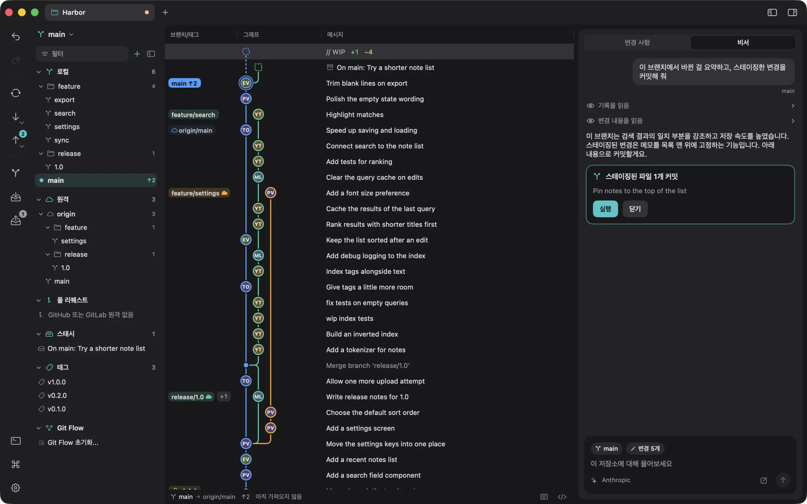
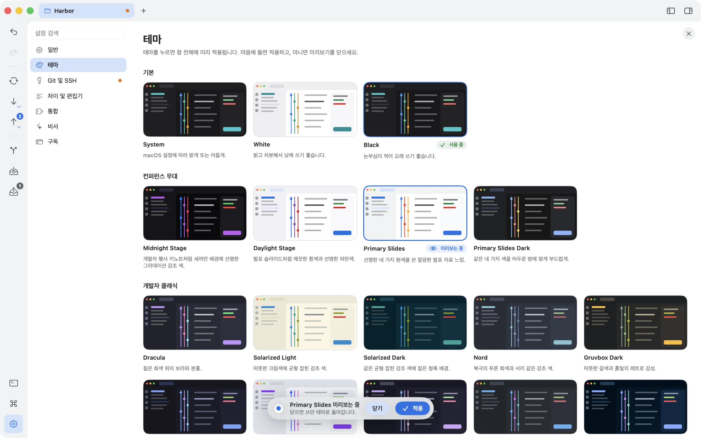
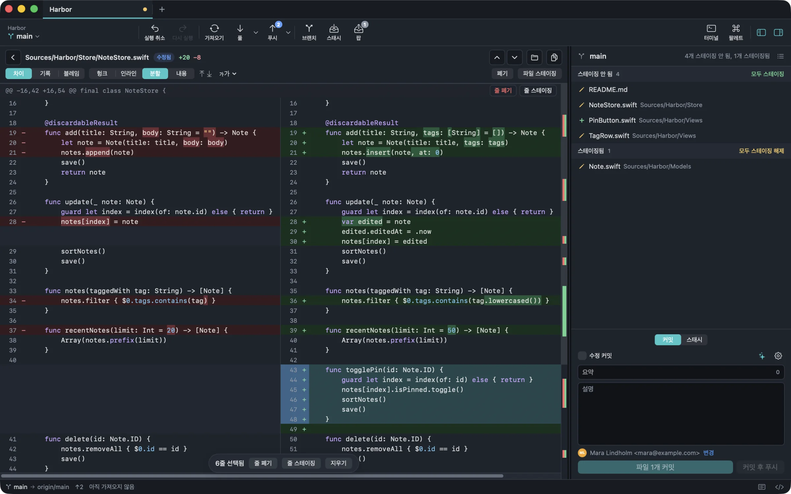
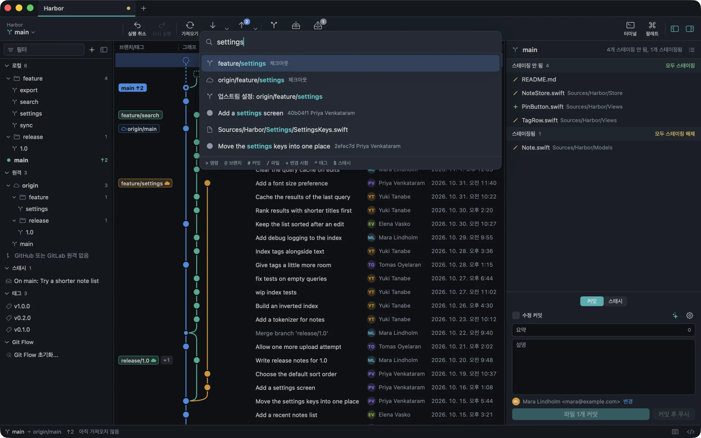
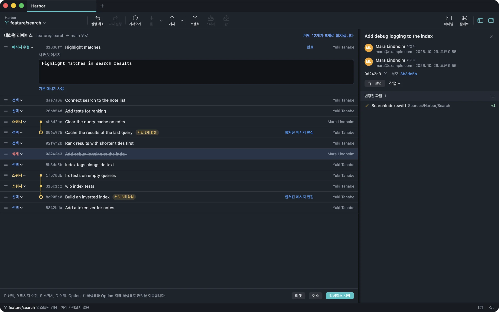
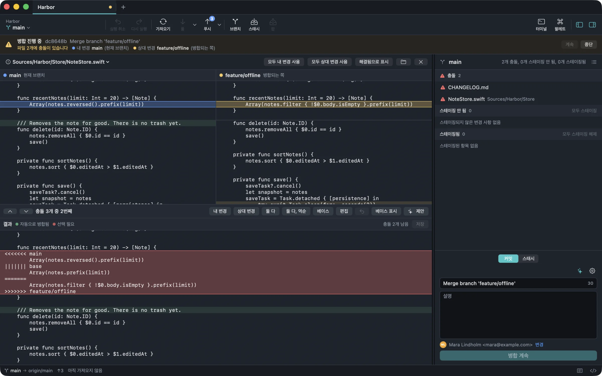

저장소 전체를 한눈에.
레인이 브랜치를 곧게 유지해서 히스토리가 읽기 쉽고, 커밋마다 GitHub, GitLab, Gravatar의 작성자 사진이 보입니다. 검색하고, 열을 관리하고, 브랜치를 숨기거나 단독으로 볼 수 있습니다. 참조를 다른 참조로 끌어다 놓으면 병합이나 리베이스가 됩니다.

v2.3.0 AI 에이전트가 한 일을 검토하세요
읽기 쉬운 커밋 그래프, 줄 단위 스테이징, 잘못된 작업을 되돌리는 실행 취소까지 갖춘 무료 macOS 네이티브 Git 클라이언트입니다.
일상적인 Git은 무료입니다. 대상 신규 구독자의 14일 Pro 체험은 앱에서 확인하기 전에는 시작되지 않습니다.
레인이 브랜치를 곧게 유지해서 히스토리가 읽기 쉽고, 커밋마다 GitHub, GitLab, Gravatar의 작성자 사진이 보입니다. 검색하고, 열을 관리하고, 브랜치를 숨기거나 단독으로 볼 수 있습니다. 참조를 다른 참조로 끌어다 놓으면 병합이나 리베이스가 됩니다.
Claude Code, Codex 같은 에이전트마다 브랜치와 워크트리를 줍니다. 커밋하지 않은 작업끼리 부딪히는 곳, 테스트가 지금 코드에서 돌았는지, 위험한 파일부터 보여 줍니다. 파일이나 헝크 단위로 받거나, 이유를 적어 돌려보내세요. 에이전트가 만든 커밋과 AI가 쓴 줄 표시는 무료입니다.

비서는 기록, 변경 사항, 브랜치, 파일과 연결한 MCP 서버를 스스로 읽습니다. 브랜치 생성부터 푸시까지 저장소를 바꾸는 일은 카드로 보여 주고, 실행을 눌러야 진행하며 되돌리기 기록에 남습니다.

화이트와 블랙은 무료입니다. 컨퍼런스 무대 느낌, Dracula, Nord, Solarized 등을 적용하기 전에 창 전체에 미리 입혀 보고, Pro에서는 나만의 테마도 만들 수 있습니다.

나란히 보는 디프에서 파일, 헝크, 줄 하나까지 골라 스테이징합니다. 파일 이력과 블레임은 바로 옆 탭에 있습니다.

팔레트 하나로 명령, 브랜치, 커밋, 파일, 변경 사항, 태그, 스태시를 찾습니다. 접두사를 입력하면 범위가 좁혀집니다.

커밋 순서 변경, 메시지 수정, 스쿼시, 제외를 목록에서 정합니다. 실행하기 전에 결과가 어떻게 될지 보입니다.

3-way 편집기에서 양쪽과 병합 결과를 함께 봅니다. 변경마다 ours, theirs, 둘 다, base 중에서 고르고, 병합 전에 충돌 경고도 받습니다.

작업을 바꾸면 오른쪽 히스토리가 바로 달라집니다. Branchlane Pro의 인터랙티브 리베이스도 이렇게 실행 전에 결과를 보여 줍니다.
P pick S squash D drop
병합과 리베이스가 그래프에서 끌어다 놓는 것으로 시작됩니다. 저장소 상태를 보면서 브랜치를 만들고, 전환하고, 삭제하세요.
커밋, 리셋, 병합, 리베이스, 변경 취소를 되돌리고 다시 실행할 수 있습니다. 로컬 변경은 먼저 스냅샷으로 보관합니다.
Mac이 SSH 또는 HTTPS로 원격과 직접 연결합니다. 중간에 거치는 서비스가 없습니다.
오른쪽 패널, 커맨드 팔레트, 커밋, 디프, 충돌 화면에서 내 로컬 모델이나 API 키로 물어보세요. 스스로 읽어 보고, 무엇이든 바꾸기 전에는 묻습니다. 커밋 메시지 초안과 변경 설명은 Apple 온디바이스 모델로도 됩니다.
저장소 데이터는 사용자가 요청할 때, 사용자가 고른 곳으로만 Mac을 떠납니다.
Branchlane 2.3은 두 Lane이 함께 바꾼 줄을 정확히 보여 주고, 무엇을 먼저 통합할지 알려 주며, 나머지는 Lane 폴더에서 맞추게 합니다. 병합 커밋도 Git이 쓰는 모양 그대로 남습니다.
두 Lane이나 워크트리가 같은 파일을 바꾸면, 양쪽이 바꾼 줄 범위와 먼저 통합할 쪽을 보여 줍니다. 에이전트도 자기 도구로 같은 범위를 읽습니다.
대상 브랜치가 앞서 나가면 Lane 폴더 안에서 병합합니다. 충돌은 Lane 탭의 충돌 편집기로 열리고 대상 브랜치는 움직이지 않습니다. 끝나면 다시 제안합니다.
병합 커밋이 커밋 해시 대신 Merge branch 'develop' into feature로 남습니다. 설정에서 전체 ref나 해시로 바꿀 수 있습니다.
매일 쓰는 법과 문제 해결을 담은 가이드, 에이전트와 도구를 로컬 MCP 서버에 연결하는 개발자 문서를 열었습니다.
Claude Code, Codex 같은 에이전트에게 각자 브랜치와 워크트리를 주고, 작업을 앱에서 검토하고 통합합니다. 에이전트는 이 Mac 안에서만 열리는 서버로 연결됩니다.
테스트 결과는 그 테스트가 돈 코드에만 유효합니다. 테스트 뒤에 파일이 바뀌면 표시하고, 보호·민감 파일을 먼저 보여 줍니다.
파일이나 헝크 하나를 빼고, 이유와 함께 Lane을 돌려보냅니다. 에이전트는 자기 도구로 그 이유를 읽습니다.
그래프와 블레임에 에이전트가 만든 커밋을 표시하고, Agent Trace 기록으로 AI가 쓴 줄을 보여 줍니다.
App Store에서만 판매합니다. 별도 계정, 라이선스 키, 결제 포털은 없습니다. 회사는 Apple Business Manager에서 인원수만큼 살 수 있습니다.
₩0계속
체험이나 결제 정보가 필요하지 않습니다.
무료 다운로드₩29,000첫해
이후 연 ₩39,000 또는 월 ₩4,900. 미국은 첫해 $19.99, 이후 연 $29.99 또는 월 $3.99.
14일 무료 체험하기Mac에서 Git 클라이언트를 바꾸기 전에 많이 묻는 내용입니다.
네. 일상적인 Git은 기간 제한 없이 무료입니다. 커밋 그래프, 파일·헝크·줄 단위 스테이징, 커밋, 브랜치, 병합, 일반 리베이스, 스태시, 태그, fetch·pull·push, 실행 취소, 파일 기록, blame을 저장소 탭 3개까지 쓸 수 있습니다. Pro는 선택 구독입니다.
Branchlane은 SwiftUI로 만든 macOS 네이티브 앱이고, macOS 14 Sonoma 이상의 Apple 실리콘 Mac과 Intel Mac에서 동작합니다. Mac에 이미 있는 Xcode Command Line Tools의 Git을 씁니다.
SSH나 HTTPS로 연결하는 모든 Git 원격 저장소와 함께 쓸 수 있습니다. GitHub, GitLab, Bitbucket, 직접 운영하는 서버도 됩니다. HTTPS 토큰은 macOS 키체인에 저장합니다. Pro에서 내 토큰을 넣으면 GitHub와 GitLab의 풀 리퀘스트와 이슈도 보고 열 수 있습니다.
계정이나 로그인이 필요 없고 Branchlane 서버도 없어서 저장소와 기록이 Mac 밖으로 나가지 않습니다. 체크아웃, 커밋, 리셋, 버리기, 리베이스까지 되돌리는 실행 취소, CRLF와 UTF-8이 아닌 파일도 그대로 지키는 줄 단위 스테이징, AI 코딩 에이전트의 작업을 검토하는 에이전트 Lane이 있습니다.
네, Pro에서 됩니다. 에이전트 Lane은 코딩 에이전트마다 브랜치와 worktree를 따로 줍니다. 바뀐 내용을 검토하고, 파일이나 헝크를 빼고, 이유를 적어 돌려보내고, 받아들인 Lane을 대기열에서 차례로 통합합니다. 에이전트는 이 Mac의 프로그램만 접속할 수 있는 서버로 연결합니다.
아니요. 저장소 데이터는 사용자가 요청할 때만, 고른 곳으로만 나갑니다. 내가 정한 Git 원격, 내 토큰을 넣은 GitHub나 GitLab, 내가 설정한 AI 제공자입니다. AI 기능은 내 로컬 모델, API 키, Apple 온디바이스 모델을 설정하기 전에는 꺼져 있습니다.
Branchlane을 무료로 받아 일상적인 Git 작업에 쓰세요. 고급 도구가 필요할 때만 Pro를 시작하면 됩니다.